Modern Software Design Patterns and Principles
- Design Principles
- Software Patterns
- Software Development Lifecycle Patterns
- Additional Software Patterns
Design principles (Nguyên tắc thiết kế)
Arguably, the most important aspect of good software development is software design. Developing software solutions that are both functionally accurate and easy to maintain is challenging and relies considerably on using good development principles. Over time, some decisions that were made early in the project can cause solutions to become too costly to maintain and extend, forcing systems to be rewritten, while others with a good design can be extended and adapted as business requirements and technology change. There are many software development design principles and this section will highlight some popular and important ones you need to be familiar with.
DRY – Don’t Repeat Yourself (Đừng lắp lại chính mình)
The guiding thought behind the Don’t Repeat Yourself (DRY) principle is that duplication is a waste of time and effort. The repetition could take the form of processes and code. Handling the same requirement multiple times is a waste of effort and creates confusion within a solution. When first viewing this principle, it might not be clear how a system could end up duplicating a process or code. For example, once someone has determined how to do a requirement, why would someone else take the effort to duplicate the same functionality? There are many circumstances in which this happens in software development, and understanding why this happens is key to understanding the value of this principle. The following are some common causes of code duplication:
- Lack of understanding: In large solutions, a developer might not have a full understanding of an existing solution and/or does not know how to apply abstraction to solve the problem with existing functionality.
- Copy and paste: To put this simply, the code is duplicated in multiple classes instead of refactoring the solution to allow for multiple classes to access the shared functionality.
KISS – Keep It Simple Stupid (Gữi sự đơn giản ngốc)
Similar to DRY, Keep It Simple Stupid (KISS) has been an important principle in software development for many years. KISS stresses that simplicity should be the goal and complexity should be avoided. The key here is to avoid unnecessary complexity and thus reduce the chances of things going wrong.
YAGNI – You Aren’t Gonna Need It (Bạn không cần nó)
You Aren’t Gonna Need It (YAGNI) simply states that functionality should only be added when it is required. Sometimes in software development, there is a tendency to futureproof a design in case something changes.

MVP – Minimum Viable Product (Sản phẩn khả thi tổi thiếu)
By taking a Minimum Viable Product (MVP) approach, the scope of a piece of work is limited to the smallest set of requirements in order to produce a functioning deliverable. MVP is often combined with Agile software development (see the Software development life cycle patterns section later in the chapter) by limiting requirements to a manageable amount that can be designed, developed, tested, and delivered. This approach lends itself well to smaller website or application development, where a feature set can be progressed all the way to production in a single development cycle.
Liskov substitution principle (Nguyên tắc thay thế Liskov)
We’ll define an interface for an animal and implement two animals, Cat and Dog, as follows:
 Being able to substitute objects at runtime is the basis of the Liskov substitution principle. In OOP, if
a class inherits from a base class or implements an interface, then it can be referenced as an object of
the base class or interface.
Being able to substitute objects at runtime is the basis of the Liskov substitution principle. In OOP, if
a class inherits from a base class or implements an interface, then it can be referenced as an object of
the base class or interface.
Dependency inversion principle (Nguyên tắc ngược đảo lật bài)
The dependency inversion principle (DIP), also referred to as the dependency injection principle, states that modules should not depend on details but on abstractions instead. This principle encourages writing loosely coupled code to enhance readability and maintenance, especially in a large complex code base.
Software patterns (Kiểu phần mềm)
Over the years, many patterns have been compiled into catalogs. This section will use two catalogs as an illustration. The first catalog is a collection of OOP-related patterns by the GoF. The second relates to the integration of systems and remains technologically agnostic. At the end of the chapter, there are some references for additional catalogs and resources.
GoF patterns (Kiểu GoF)
Potentially, the most influential and well-known OOP collection of patterns comes from the Design Patterns: Elements of Reusable Object-Oriented Software book by GoF.
The collection is broken into three categories: creational patterns, structural patterns, and behavioral patterns which will be explained in the following sections.
Creational patterns (Các mẫu sáng tạo)
The following five patterns are concerned with the instantiation of objects:
- Abstract Factory (Nhà máy trựu tượng): A pattern for the creation of objects belonging to a family of classes. The specific object is determined at runtime.
- **Builder (Thợ xây dựng) **: A useful pattern for more complex objects where the construction of the object is controlled externally to the constructed class.
- Factory Method (Phương pháp nhà máy): A pattern for creating objects derived from a class where the specific class is determined at runtime.
- Prototype (Nguyên mẫu): A pattern for copying or cloning an object.
- Singleton (Kế thừa 1 lớp): A pattern for enforcing only one instance of a class. 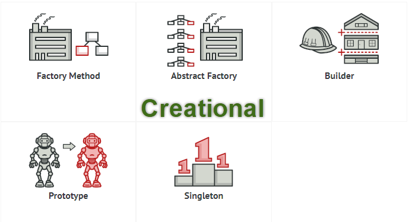
Structural patterns (Mô hình cấu trúc)
The following patterns are concerned with defining relationships between classes and objects:
- Adapter (Bộ chuyển đổi): A pattern for providing a match between two different classes
- Bridge (Cầu): A pattern for allowing the implementation details of a class to be replaced without requiring the class to be modified
- Composite (Tổng hợp): Used to create a hierarchy of classes in a tree structure
- Decorator (Người trang trí): A pattern for replacing the functionality of a class at runtime
- Facade (Mặt tiền): A pattern used to simplify complex systems
- Flyweight (Hạng ruồi): A pattern used to reduce the resource usage for complex models
- Proxy (Ủy quyền): A pattern used to represent another object allowing for an additional level of control
between the calling and called objects

Decorator patterns (Màu sắc Text)


 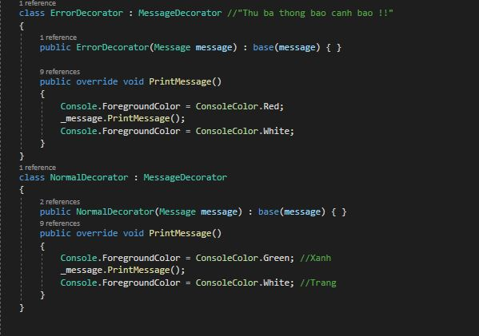
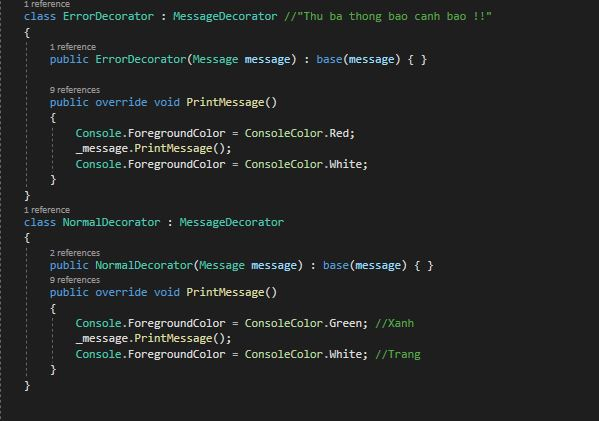
Behavioral patterns (Kiểu hành vi)
The following behavioral patterns can be used to define the communication between classes and objects:
- Chain of Responsibility(Chuỗi trách nhiệm): A pattern for handling a request between a collection of objects
- Command (Chỉ huy): A pattern used to represent a request
- Interpreter (Thông dịch viên): A pattern for defining syntax or language for instructions in a program
- Iterator (Trình thuyết): A pattern for traversing a collection of items without detailed knowledge of the elements in a collection
- Mediator (Hóa giải): A pattern for simplifying communication between classes
- Memento (Kỉ niệm): A pattern for capturing and storing the state of an object
- Observer (Quan sát): A pattern for allowing objects to be notified of changes to another object’s state
- State (Tiểu bang): A pattern for altering an object’s behavior when its state changes
- Strategy (Chiến lược): A pattern for implementing a collection of algorithms where a specific algorithm can be applied at runtime
- Template Method (Mẫu phương pháp): A pattern for defining the steps of an algorithm while leaving the implementation details in a subclass
- Visitor (Khách tham quan): A pattern promoting loose coupling between data and functionality, allowing for additional operations to be added without requiring changes to the data classes 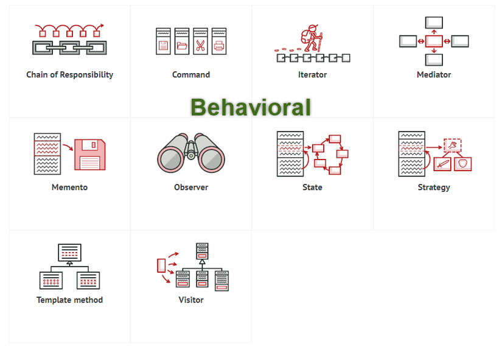
Chain of responsibility
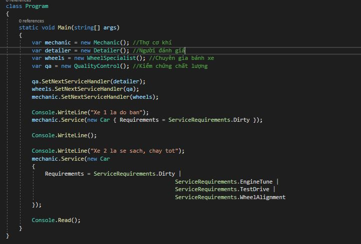
 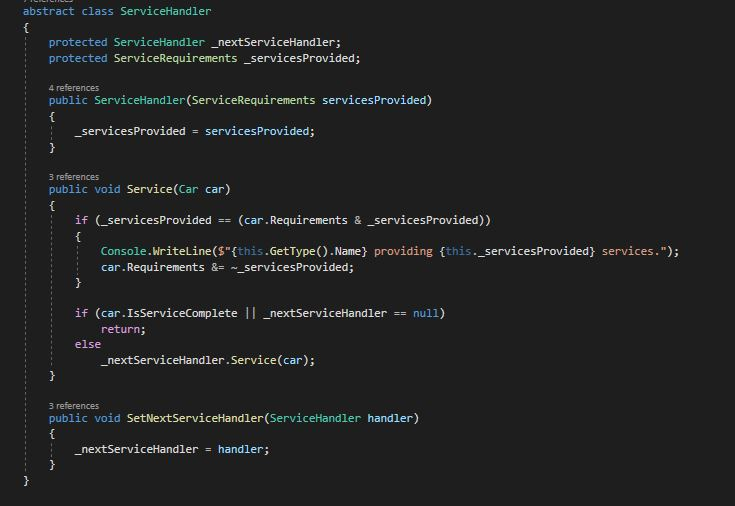
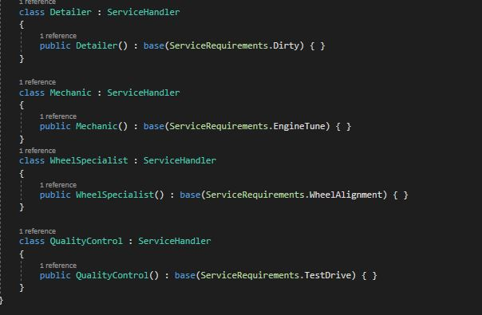
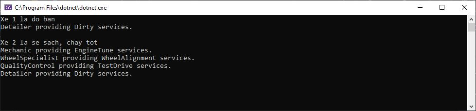
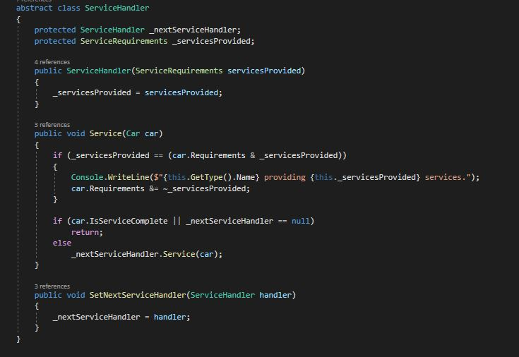
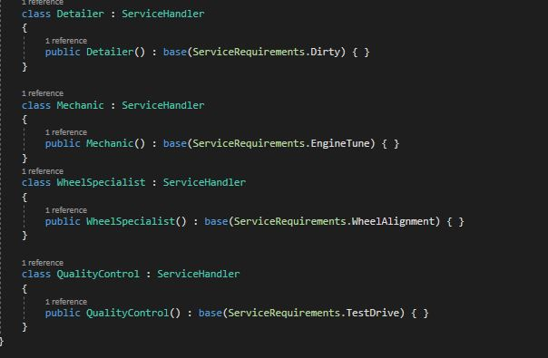
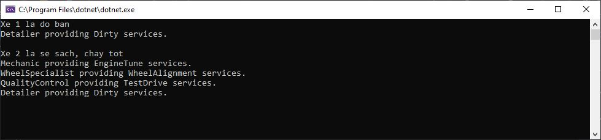
Observer pattern (Kiểu quan sát)
An interesting pattern to explore in more detail is the Observer pattern. This pattern allows for instances to be informed of when a particular event happens in another instance. In this way, there are many observers and a single subject. The following diagram illustrates this pattern: 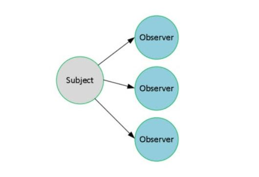 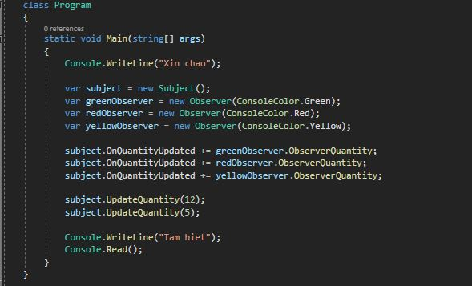 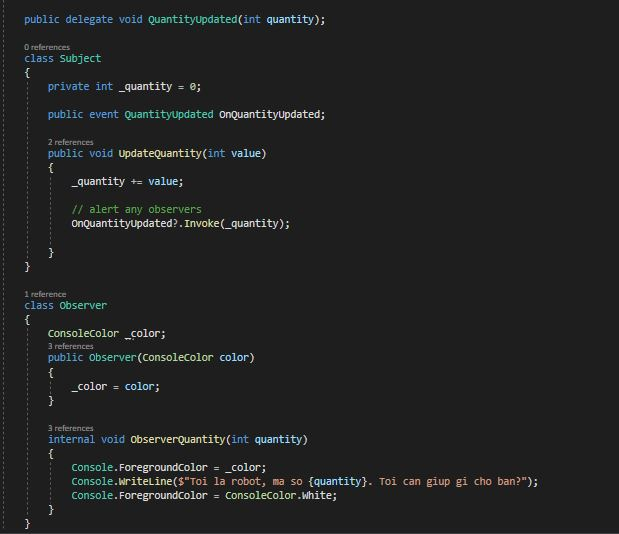 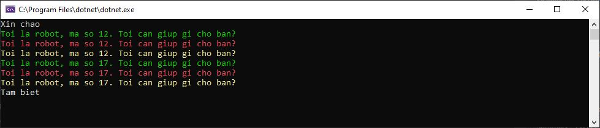
Patterns
- Messaging: Patterns related to the handling of messages
- Transformation: Patterns related to altering message content
- Routing: Patterns related to the exchange of messages 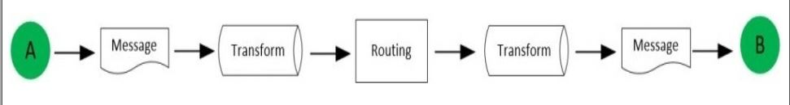
Software Development Lifecycle Patterns (Các kiểu vòng đời phát triển phần mềm)
There are many approaches to managing software development and the two most common software development life cycle (SDLC) patterns are Waterfall and Agile 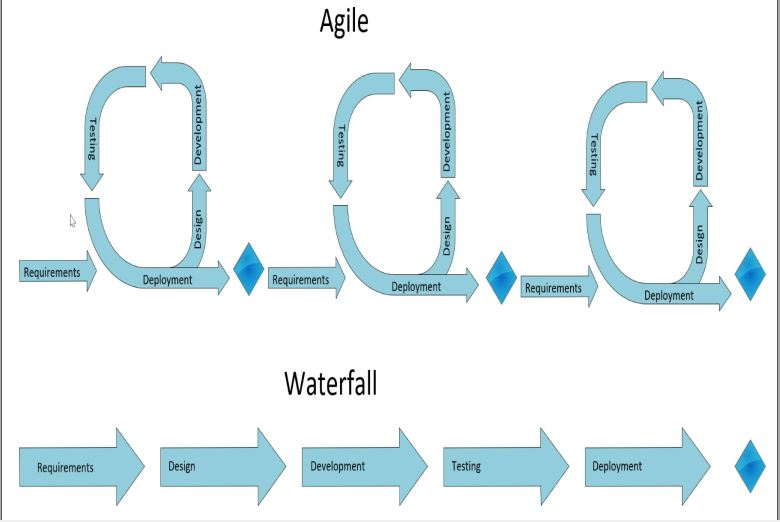
Summary
In this chapter, we have discussed major design patterns used in modern software development that were introduced in the previous chapter. We started with the discussion of various software development principles such as the DRY, KISS, YAGNI, MVP, and SOLID programming principles.
Then, we covered software development patterns including GoF and EIPs. The methodology for SDLC was covered, including Waterfall and Agile. The purpose of this chapter was to illustrate how patterns are used across all levels of software development.
As the software industry matures, patterns emerge as experience evolves, techniques grow, and technology advances. Some patterns have been developed to help different phases of the SDLC. For example in Chapter 3, Implementing Design Patterns - Basics Part 1, Test-driven development (TDD) will be explored, where the definitions of tests are used to provide both measurable progress as well as clear requirements, during the development phase. As the chapters progress, we will discuss higher levels of abstraction in software development, including patterns for web development as well as modern architecture patterns for on-premise and cloud-based solutions.
In the next chapter, we will start by building a fictitious application in .NET Core. Also, we will explain the various patterns discussed in this chapter, including programming principles such as SOLID, and illustrate several GoF patterns.